Uploading to GitHub
Overview
This section will focus uploading your code onto GitHub. It is platform that hosts git repositories onto the cloud, which allows developers to collaborate with each other.
Warning
Ensure that your terminal is in the rock_paper_scissor directory that you created previously in  Setting Up Your Project.
Setting Up Your Project.
Ensure that you have a GitHub account. If you do not have a GitHub account, click here and follow the steps to create an account.
Initializing Local Git Repository
This section focuses on creating a .git directory to allow for version control using the terminal.
-
Create a
.gitdirectory in the terminal by typing the following:a. The
git initcommand creates a new Git repository. It is the first step in implementing version control to your project.b. The
.gitdirectory is part of the version control system that allows developers to create and retrieve different versions of any project. This allows for version rollbacks if any major mistakes occur.Success
Successfully creating a
.gitdirectory will look like this: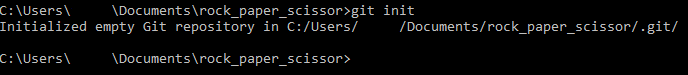
Notes
Professional software developers will use some form of version control for work and for their personal projects.
You will not be able to see the
.gitdirectory because it is hidden by default.
Adding Code to Git
This section focuses on adding your newly created game into version control using the terminal.
-
Stage file in the terminal by typing the following:
a. The
git addcommand stages the file. Staging a file means that you have marked a modified file in its current version to go into the next commit. -
Commit file in the terminal by typing the following:
a. Commits can be thought of as snapshots or milestones along the timeline of a project. A
git commitcommand captures a state of a project at that point in time.b. Everything in quotation marks after the
-moption sets a message that tells other developers what changes you made for the current commit. You can replace the message with anything you like as long as it is wrapped in quotation marks.Success
Successfully committing your code to your local .git directory will look like the following:
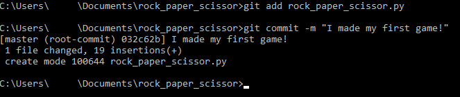
Failure
If you forget to
git addto stage a file after modifying it, then the following message will be shown: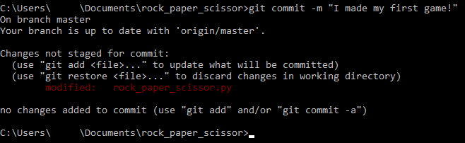
Follow the instructions here to stage the file and then commit the file to fix this issue.
Notes
A good practice is to have clear and concise messages that tell other developers what you changed in your commit.
Creating Online Cloud Repository on GitHub
This section focuses on creating an online cloud repository in GitHub for you to upload your project to.
-
Login to GitHub and create a new repository as highlighted below:
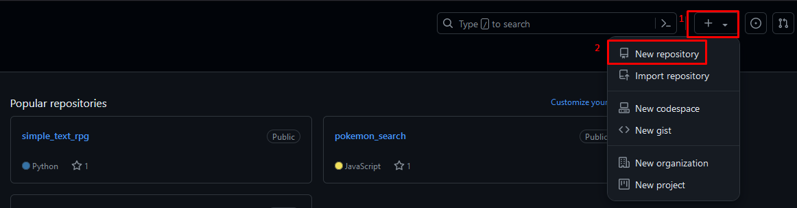
a. Click on the "+" sign first
b. Click on "New repository" next.
-
Enter a repository name by typing the following:
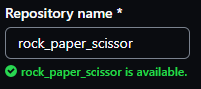
a. If your project folder name is not
rock_paper_scissor, enter the name you used instead. -
Create repository by clicking the following:
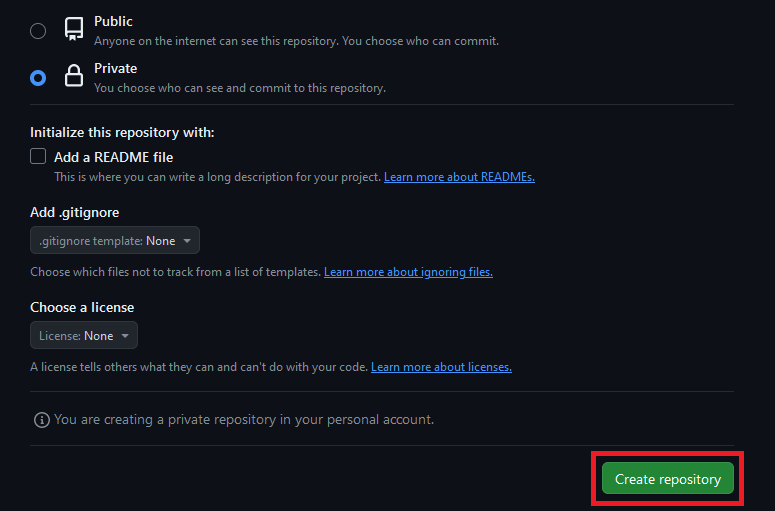
a. You may change the project visibility to private, so that only you and your project collaborators can view the project.
b. All other settings can be left as default.
Success
Successfully creating the
rock_paper_scissorrepository will move you to the next page shown below: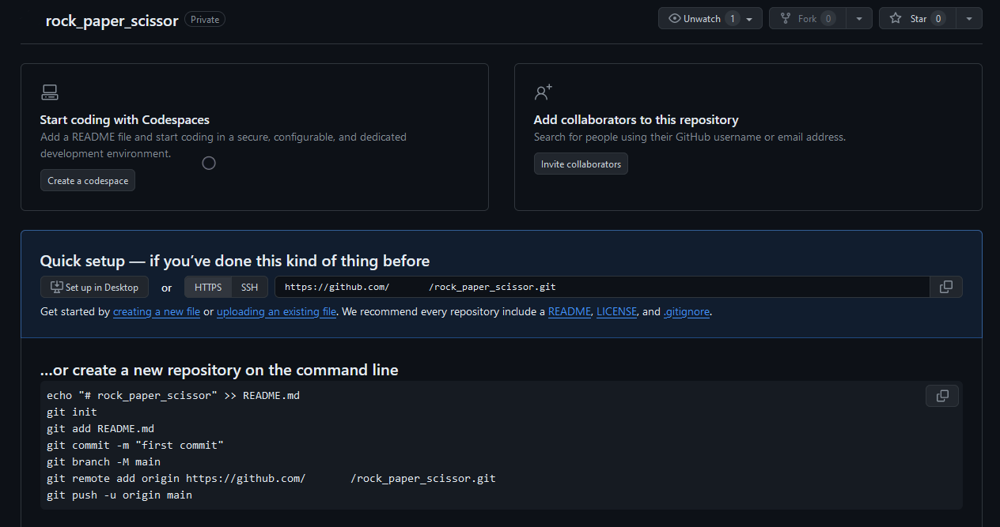
This newly created cloud repository will host your project, and make it easy for you to access the project remotely.
Connecting Local Repository to Cloud Repository
This section focuses on connecting your local .git folder to the cloud GitHub repository using the terminal.
-
Copy the new GitHub repository link: 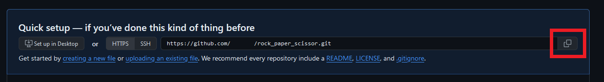
a. Click on the "copy" button that is highlighted.
-
Use the terminal to link your local repository to the cloud repository by typing the following:
a. The link after the word
originshould be replaced with the link you copied into your clipboard in the previous step.b. In Git, "origin" is a shorthand name for the cloud repository that a project was originally cloned from.
c. The
git remote add origincommand sets up a remote repository with the name "origin" at the address that follows.Notes
You may CTRL + V to paste in the terminal. Some Windows version also allow right-clicking in the terminal to paste.
-
Upload local repository to cloud repository by typing the following:
a. The option
-umeans to setupstream. It configures the local branch to track the remote branch.b.
masteris the default name given to the first branch present in a Git repository when it is initialized.c. Some users will have "master" as a default name, while some others will have "main" as a default name. If you encounter an error, try the other.
Success
Successfully uploading the local repository to the remote repository will look like the following:
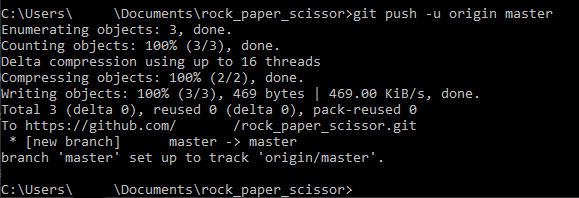
Failure
If you type another common branch name like
main, then there is a chance that you will get a "refspec" error shown below: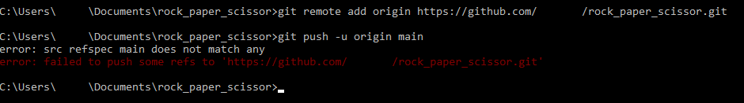
If
maindoes not work, trymaster. Ifmasterdoes not work, trymain. -
Visit the GitHub repository to ensure changes have been made:
Success
Successfully uploading the project on to your GitHub repository should look like the following:
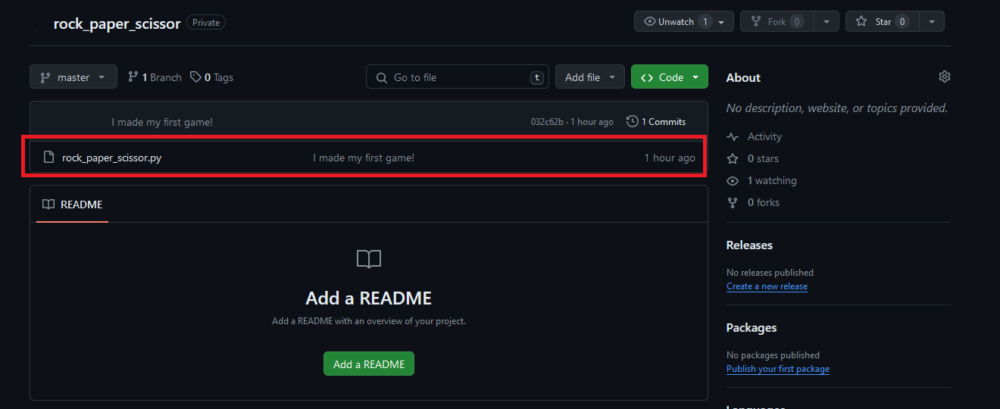
Notes
You may have to refresh your
rock_paper_scissorGitHub repository page to see your changes.
Conclusion
By the end of this section, you will have successfully completed the following tasks important to every developer:
- Initialized a local repository.
- Staged and committed files to a repository.
- Hosted an GitHub repository online.
- Connected a local repository to a cloud repository in GitHub.
Congratulations! 🥳🎉
You have taken your first steps towards becoming a full-fledged developer.
If you have encountered any problems throughout the tutorial, please proceed to Troubleshooting for solutions to common problems.
If you need more explanation on some of the terms used in this document, please proceed to Glossary for definitions to the terms used in this document.